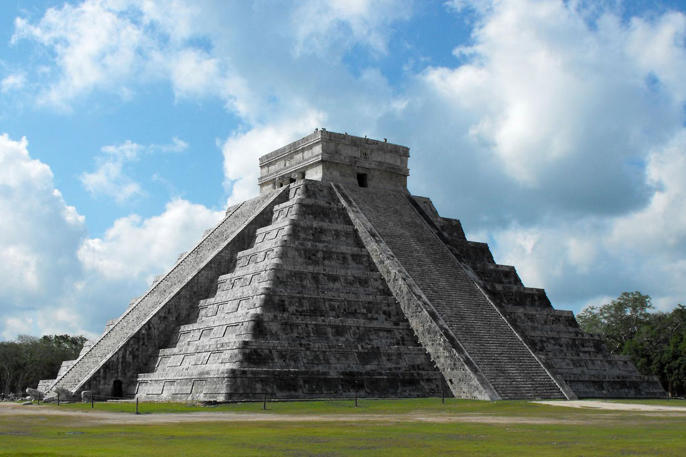
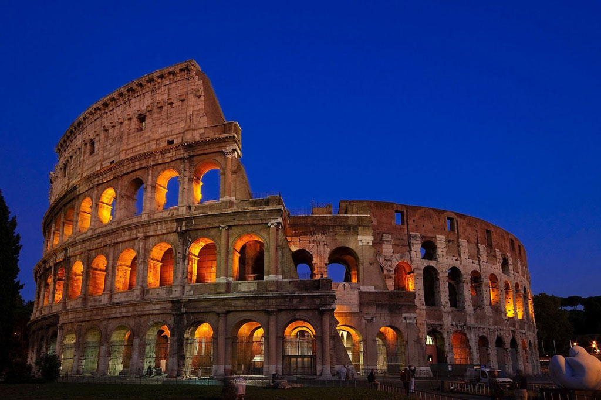
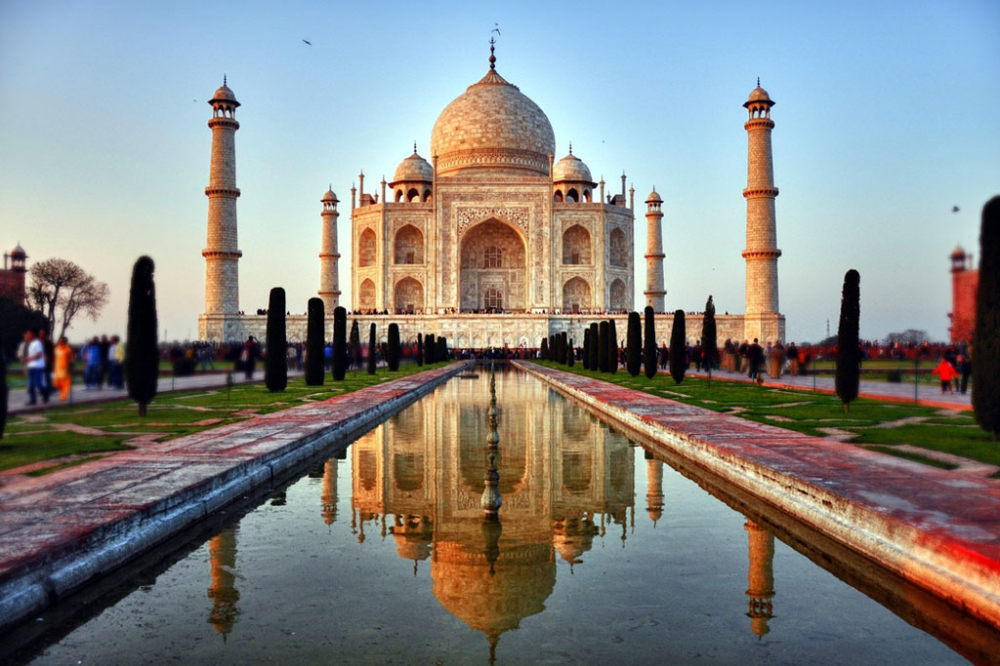

1-Chichen Itzá la legendaria ciudad Maya ubicada en el sur de México.2-La estatua de Cristo Redentor situada en la cima del cerro de Corcovado hacia Río de Janeiro en Brasil.3-Machu Picchu ubicado entre las montañas Huayna Picchu y Machu Picchu en Perú.

4-El Coliseo Romano construido en el siglo I D.C, en el centro de Roma, Italia.

5-El Taj Mahal situado en Agra una ciudad de Uttar Pradesh, en la India.6-La Gran Muralla China construida en el siglo 4 a.C. y reconstruida en el siglo 16.7-La ciudad de Petra, construida en el siglo 7 a.C. en Jordania.